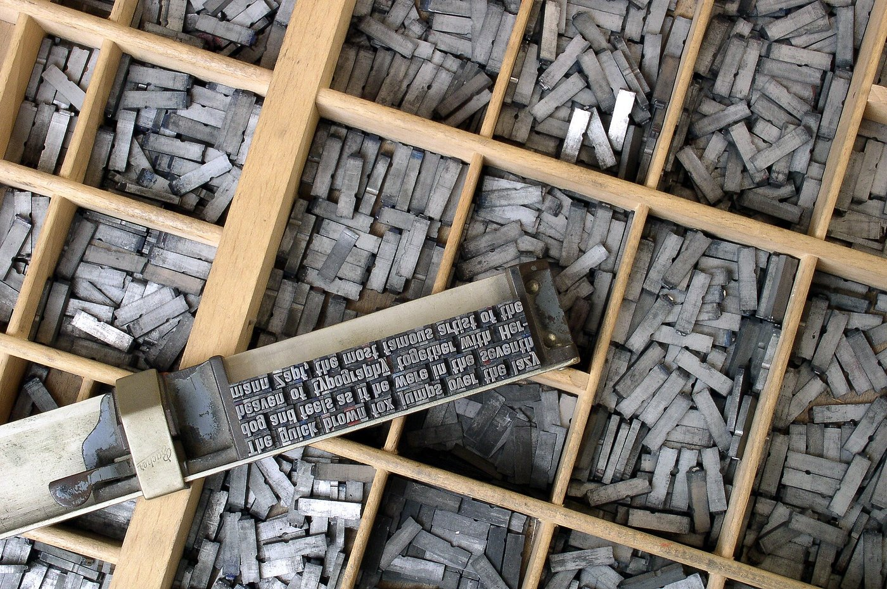

Road map
Lesson of 55 minutes, timed for 52 minutes. 1 lesson.
- Opening, aims, help in class 4 min
- Watch the video and note two or three key points 6 min
- Set 1 · End marks 8 min
- Set 2 · The apostrophe 8 min
- Set 3 · Capital letters 7 min
- Set 4 · The comma changes the meaning, with a class round 8 min
- Set 5 · Punctuate a dialogue 6 min
- Set 6 · Start the rewrite (written record); finish at home if needed 5 min
- Written record. The opening of the Set 6 rewrite, or two corrected sentences (one apostrophe, one capital letter).
- Participation: everyone speaks at least once: one sentence on a comma pair from Set 4, or one corrected end mark from Set 1.
- Homework for next lesson. Finish the Set 6 rewrite; make six bristol cards for the marks or forms that are still fragile.
Stopping point. End of this lesson.
Emergency exit · 8 min. If time runs short at this stopping point, we condense: we dictate a short written record (It’s raining again. On Monday I have English at nine.); a round of the class, one sentence each on a comma pair from Set 4, so that everyone has spoken at least once; the homework (finish the Set 6 rewrite, and make six bristol cards) is written on the board.

The video
Set 1 (A2): Find the missing punctuation
Add a full stop, a question mark or an exclamation mark.
- Where do you live
- I work in a garage
- Watch out
- What time is it
- My sister is a nurse
- Well done
Set 2 (A2): The apostrophe
Choose the correct form.
- (Its / It’s) raining again.
- The cat is eating (its / it’s) food.
- This is my (brother’s / brothers’) car. (one brother)
- The (student’s / students’) bags are in the classroom. (many students)
- I (dont / don’t) like coffee.
- (Were / We’re) late for the bus.
Set 3 (A2 to B1): Capital letters
Rewrite each sentence with capital letters where needed.
- on monday i have english at nine.
- my birthday is in july.
- sara is spanish and lives in madrid.
- we visited london in december.
Set 4 (B1): The comma changes the meaning
Explain the difference between the two sentences. Everyone speaks at least once: one sentence on one of the pairs.
- Let’s eat, Grandma! / Let’s eat Grandma!
- The teacher said the student is late. / The teacher, said the student, is late.
- I thank my parents, Anna and James. / I thank my parents, Anna, and James.
Set 5 (B1): Punctuate a dialogue
Add quotation marks, commas, question marks and capital letters.
tom said are you coming to the match on saturday
yes i am answered lily
great said tom bring your scarf
Set 6 (B1): Rewrite the text
Rewrite this text with full punctuation and capital letters. Start in class; finish at home if you need more time.
last friday i went to the cinema with my friends we watched a film about a young chef its called the kitchen it was funny exciting and a bit sad did you see it
Answer key
Set 1
- Where do you live?
- I work in a garage.
- Watch out!
- What time is it?
- My sister is a nurse.
- Well done!
Set 2
- It’s
- its
- brother’s
- students’
- don’t
- We’re
Set 3
- On Monday I have English at nine.
- My birthday is in July.
- Sara is Spanish and lives in Madrid.
- We visited London in December.
Set 4
- In the first sentence, we invite Grandma to eat. In the second sentence, Grandma is the meal.
- In the first sentence, the teacher is speaking. In the second sentence, the student is speaking, and the teacher is late.
- In the first sentence, Anna and James are the parents. In the second sentence, the comma shows that there are four people.
Set 5
Tom said, “Are you coming to the match on Saturday?”
“Yes, I am,” answered Lily.
“Great,” said Tom. “Bring your scarf.”
Set 6
Last Friday, I went to the cinema with my friends. We watched a film about a young chef. It’s called The Kitchen. It was funny, exciting and a bit sad. Did you see it?
My bristol flashcards · how to use them
Principle: each student makes their own cards by hand, on bristol cards. Writing the mark or the form is already a way of learning it. The pack stays in their bag: they can revise anywhere, with no screen.
Materials
A7 bristol cards (74 × 105 mm), or A6 bristols cut in half. Coloured felt-tip pens. An elastic band or an envelope for the pack. A small cardboard box with three compartments for practice (a shoe box with two dividers is enough). You can also print the blank template and cut it out.
Blank template: PDF · DOCX · ODT.
Colour code
| Category | Pen colour |
|---|---|
| End marks and capitals | green |
| The apostrophe | red |
| The comma | blue |
| Dialogue (quotation marks and commas) | purple |
When to make the cards
| When | Cards to make |
|---|---|
| During the sets, as errors appear | A few cards for the marks or forms that are still fragile. |
| Homework after the lesson | Finish a pack of six cards, then practise in pairs, with three boxes. |
Practice in pairs, with three boxes
A shows the front, B gives the meaning and a sentence. If the card is right, it moves on one box. If it is wrong, it goes back to box 1. Target: 6 cards in box 3.
Items to put on the cards (not a ready-made deck)
Choose the points that are still fragile. Suggested fronts, among others:
- a full stop / a question mark / an exclamation mark
- it’s / its
- brother’s / brothers’ (one brother / several brothers)
- don’t, we’re, let’s
- capital letters: days, months, languages, countries, cities, names
- Let’s eat, Grandma! / Let’s eat Grandma!
- how to punctuate a line of dialogue: Tom said, “…”
Downloads
Student sheet: PDF · Word (.docx) · LibreOffice (.odt).